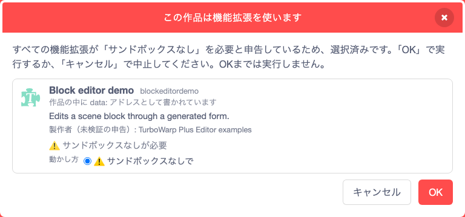

機能ガイド 1/12 · 2026年11月14日更新
作品を開き、拡張を準備する
新しい作品を始め、手元のSB3を開き、公式カタログから拡張を追加します。拡張を含む作品は、取得元と実行条件を確かめてから開きます。
1.1 作品を新しく作る・SB3を開く
公開版（GitHub Pages）のエディターを日本語で開くと、新しい作品の状態で始まります。作業中に新しい作品へ切り替えるには、「ファイル」→「新しいプロジェクトを作成」を選びます。
手元の作品は「ファイル」→「SB3ファイルを開く…」から開きます。Scratch 3で保存したSB3も、標準TurboWarpで保存したSB3も開けます。旧形式の .sb、.sb2 も選べますが、上書き保存はできないため、編集後は「名前を変えて保存…」で .sb3 にします。SB3をsb3-toolchain（作品をファイル単位に展開するツール）で展開したフォルダを、このガイドでは「作品フォルダ」と呼びます（画面では「プロジェクトフォルダ」と表示）。作品フォルダは「プロジェクトフォルダを開く…」から開きます（作品フォルダを開いて保存する）。

展開後の大きさが標準の上限（64 MiB）を超える作品を開こうとすると、「大きな作品を開く」の確認が出ます。確認画面には、展開後のおおよその大きさと、メモリを大量に使ってタブが応答しなくなるおそれがあることが表示されます。「開く」を選んだときだけ、その回に限り最大256 MiBまで開きます。既定で選ばれているのは「開かない」です。作成者や入手元に心当たりのない作品は開かないでください。
1.2 読み込みの経過を確かめる
SB3の読み込み中は、「プロジェクトを読み込み中…」の下に現在の工程が表示され、その下に「読み込み履歴」が並びます。大きな作品や多くの拡張を含む作品で、どこに時間がかかっているかを確かめられます。
| 表示 | 行っていること |
|---|---|
| プロジェクトの読み込みを準備中… | ファイルを受け取り、読み込みを始める |
| SB3 内の作品データを確認中… | Plusの組み込みデータや拡張の保存情報を確かめる |
| SB3 を検査・展開中… | ZIPの構造を検査して展開する |
| プロジェクトを解析中… | 作品データ（project.json）を読み取る |
| 画像・音声を読み込み中… | 素材を読み込む。後ろに「(読み込み済みの件数/総数)」が付く |
| 拡張機能を読み込み中… | 拡張コードを取得・照合する |
| ユーザーの確認待ち… | 拡張の確認画面で選ぶのを待っている |
| エディターを準備中… | 読み込んだ作品を画面に表示する |
「読み込み履歴」には、完了した工程ごとに、時刻と読み込み開始からの経過秒数が並びます。まだ完了した工程がないときは「完了した工程はまだありません。」と表示されます。読み込みに失敗したときの原因は、作品の診断で確かめます。
1.3 カタログから拡張を追加する
「ファイル」→「機能拡張…」を開くと、「機能拡張」ダイアログに作品で使用中の拡張が並びます。「機能拡張の追加」を押すと「機能拡張を作品に追加する」画面が開くので、上部の「TurboWarp Plus」を選びます。Scratch配置では、左下の拡張ボタンからも同じ画面を開けます。
- 追加する拡張にチェックを入れます。チェックボックスのほか、拡張のアイコンを押しても選べます。その拡張が必要とする拡張も自動で選ばれます。
- 上部の「すべての動かし方」で、選んだ拡張を「サンドボックスの中で」動かすか「サンドボックスなしで」動かすかをまとめて選べます。
- 拡張コードをどこから読み込むかを「読み込み元」（「キャッシュを残す（既定）」「毎回取得する」「作品の中から」「作品の中の data: アドレスから」）で選びます。「すべての読み込み元」でまとめて設定するか、拡張ごとに設定します。読み込み元は、作品を保存するときの拡張コードの置き方も決めます。このガイドではこれを格納方式と呼びます（「機能拡張」ダイアログでも「格納方式」と表示されます。拡張コードの格納方式を選ぶ）。
- 「追加」を押します。


公式カタログに載っている拡張は、エディターが信頼済みとして扱います。作品を開くときに個別には確認せず、サンドボックスなしで動かします。拡張の説明はエディターの表示言語に合わせて表示され、提供元のWebサイト、リリース、製作者の連絡先へのリンクも開けます。カタログにないURLから追加するときは、「すべて」や「TurboWarp」にある標準の「カスタム拡張機能」を使います。
1.4 作品を開く前に拡張の実行条件を確認する
確認が必要な拡張を含む作品を開くと、実行前に「この作品は機能拡張を使います」の画面が出ます。Plus形式の拡張と通常のカスタム拡張をまとめて確認し、取得元を見ながら、拡張ごとの「動かし方」を「動かさない」「サンドボックスの中で」「サンドボックスなしで」から選びます。拡張が複数あるときは、上部の「すべての動かし方」でまとめて選べます。

- 動かし方は、最初は「サンドボックスの中で」が選ばれています。作品のすべての拡張が「サンドボックスなしが必要」と申告している場合だけ、最初から「サンドボックスなしで」が選ばれ、ほかの選択肢と「すべての動かし方」は表示されません。このときは「OK」で実行するか、「キャンセル」で開くのをやめます。
- 「サンドボックスなしが必要」と申告している拡張にほかの動かし方を選ぶと、警告が表示されます。
- 「動かさない」を選んだ拡張は、コードを取得せず、読み込みません。
- ZIPにまとめて配布された拡張では、SHA-256が一致したZIP内のコードから拡張名を読み取り、実行前に表示します。名前を確定できない場合は拡張のIDを表示します。
- 確認画面は移動・リサイズ・最大化できます。
SHA-256で確かめるのは、コードの内容が記録されたものと一致するかどうかです。サンドボックスなしの拡張は、作品・エディター・このサイトのデータにアクセスできます。「サンドボックスなしで」は、内容と提供元を確かめた信頼できるコードにだけ選びます。
1.5 拡張の取得に失敗したとき
拡張コードの取得を待っている間は、画面中央に待機中のダイアログが表示されます。
- カタログの一覧の取得に失敗した場合は「再試行」で一覧を取り直します。
- 拡張コードの取得に失敗し、やり直せば成功する見込みがある場合だけ「もう一度試す」が表示されます。選んだ格納方式はそのまま保たれます。
- ハッシュの不一致や配信元の404など、やり直しても結果が変わらない失敗では、表示された理由を確認します。
失敗した回の詳しい記録は作品の診断で確認できます。
1.6 作品が開けないときに診断を読む
「ファイル」→「作品のプロパティ」を開き、右下の「作品の診断…」を押すと、作品の読み込み結果を確かめられます。Plus拡張については、取得元・実行モード・コード照合に使うSHA-256と、検証・許可・再試行・失敗などのイベントが表示されます。

- 上部の「読み込みの記録」で、確認したい回を選びます。直近5回を保持し、各回の最新50件のイベントを表示します。
- 拡張やイベントの行を展開し、取得元・検証結果・理由コード・再試行回数などを確認します。失敗した回も、次の作品を開いた後で選べます。
- 「診断をコピー」で、選んだ回の記録をコピーします。クリップボードへ書き込めない環境では、選択してコピーできるテキストを表示します。
- 「閉じる」またはEscでエディターへ戻ります。診断を開閉しても作品データは変わりません。
失敗通知から診断を開く
読み込みに失敗したときは、画面下部に「作品を開けませんでした。」の通知が出ます。通知の「詳細ログを表示」を押すと、その回の診断が開きます。通知を閉じたあとも、直近5回に含まれる記録は作品のプロパティの「作品の診断…」から開けます。通信エラーでやり直せる場合は、拡張の取得に失敗したときに表示される「もう一度試す」を使います。

検証・許可の確認
成功・再試行・失敗
回を選択・詳細・コピー
診断の記録が残る範囲
記録はエディターを開いている間だけ保持され、ページを再読み込みすると消えます。コピーした記録には作品名、取得URL、失敗理由などが含まれます。記録を見ても実行の許可は変わりません。許可は作品を開く前の確認画面で選びます。